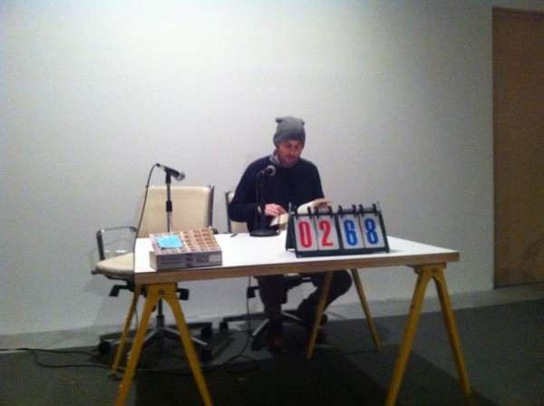
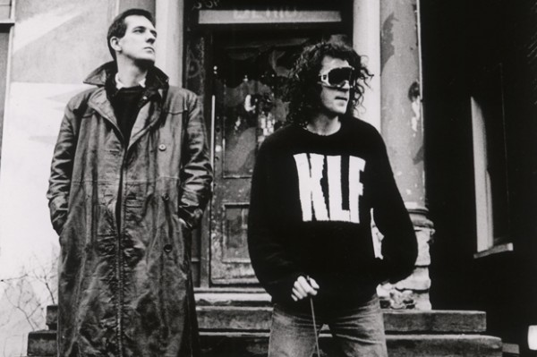
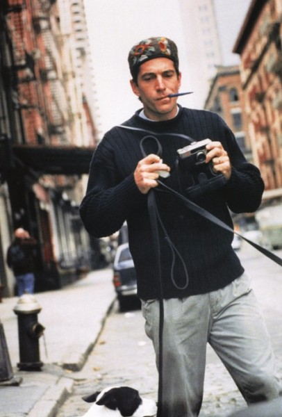

-
Selection No. 8
by Timothy Hull February 5, 2013
French sailer Bernard Moitessier.
1. You may be somewhat familiar with the 1968 Golden Globe sailing race, which was the first non-stop around the world single-hand sailing competition. Today, this feat is accomplished by teenagers in an almost quotidian fashion, but in the late 60′s it was still a life-and-death challenge with little instrumentation besides compass and sextant. Bernard Moitessier, a Frenchman, was the projected winner of the ill-fated Golden Globe race, and just as he was drawing towards the finish line, he decided to turn his boat around and sail the world again, eschewing the fame and fortune that would come from a record-breaking win. Moitessier enjoyed the zen and quietude of the sea so much that he began to sail for the pure joy of it rather than the notoriety. Most accounts of the Golden Globe race either focus on its winner Robert Knox Johnson, or one of the colorful losers, Donald Crohurst, who faked his voyage progress and in total lunacy, committed suicide off the coast of South America. However, Moitessier is the unsung sailor and I find his journey not only romantic, but heroic.
A reader at The Making of Americans. image courtesy of Peter Russo.
2. Picking up where Paula Cooper Gallery left off, Triple Canopy hosted their second annual marathon reading of Gertrude Stein’s impenetrable modernist tome, The Making of Americans. Featuring dozens of readers over an entire weekend, the marathon has become something of a spectacle. It can be equal parts fun and tedious, yet somewhat entertaining to hear people fumble over the repetitions and roller coaster language of Stein. The mise-en-scène of the marathon reading is somewhere between an underground Hasidic Jew Talmud recital and a secret tribunal of a banana republic due to the rather bleak, windowless space and stark reading table and microphone. All of this adds to the relentless, no frills prose of Stein. Triple Canopy themselves once said “The Medium was Tedium.” So, if the shoe fits!
KLF. photo by Ronnie Randall/Corbis, courtesy of SPIN.
3. After completely deleting their entire back catalogue of songs after they disbanded in 1992, a number of KLF songs magically and mysteriously appeared on Spotify. The seminal concept-band is known for drastic acts of creativity, such as burning a million British Pounds on a beach, shooting the audience at the Barbican with fake machine guns or traversing the countryside looking for mystical ley lines in a time-traveling vintage police car called Ford Timelord. Subsequently, they are one of the strangest, most intriguing musical acts. It’s been over 20 years since you could access the KLF through recognized channels — either by buying a CD or Mp3, so this was a big deal in the world of Mystical Stadium House. Many thought they would never again hear The Lost Sounds of Mu. All Bound for MuMu Land!
Robert Ferro. courtesy of Elisa Rolle.
4. Robert Ferro was a novelist and founder of the Violet Quill, a seminal gay literary group in New York and died of AIDS in 1988 only two months after his life partner, Michael Grumley. The two men were inseparable and were great forces in the gay literary milieu of 70′s and 80′s New York. In the late 60′s at the behest of a gypsy in Rome, the two men sailed to the Caribbean in a small boat in search of the lost city of Atlantis. What they did find was a strange, underwater wall off the island of Bimini. They wrote a compelling and magical book about their journey titled Atlantis: The Autobiography of a Search which launched their literary careers. Every year they are remembered by the Ferro Grumley Award, given out to the best in gay fiction.
Brand New.
5. No one with any cultural capital gives Brand New their due. The band is an important part of the late 90′s Long Island ‘screamo’ and hardcore scene, but has consistently surpassed that and developed into one of the more unique, complex, dark and moody bands playing today. I think Jesse Lacey (the lead singer/songwriter) is firmly in the direct lineage of Morrissey, Eliot Smith and Jeff Mangum and like them, expresses true pathos and carries a signature voice. Every album of theirs sounds different than its predecessor and we sometimes wait five years between each. In my opinion, after you hear Jesse Lacey, most voices sound like nails scratching on a chalkboard.
JFK, Jr.
6. John F Kennedy Jr fulfilled Kennedy to every measure. Devastatingly good looks, uniquely classic style and remarkably tragic death. The archetype of 90′s New York yuppie chic who made politics, magazines and TriBeCa look cool when no one else could. What’s not to love?

Pier Paolo Pasolini, poet and filmmaker.
7. In 1999 I fell in love with Pier Paolo Pasolini when a new friend in Florence, Italy gave me a book of his poems. I then set out to translate them and thus my first introduction to Pasolini was as a poet, not a filmmaker. This holiday, the Museum of Modern Art featured the films and poetry of Pasolini with concurrent screenings at PS1. For me, it was like a Christmas gift! I have always felt that PPP is one of the more under-recognized (outside of Italy) poets and filmmakers, so this attention was long overdue.
A farmhouse.
8. The Gaeltacht is the Irish language speaking part of Ireland, and I have been romantically fascinated with it since I studied Irish a few years ago. I have fleeting fantasies about buying a dilapidated old thatch roof farmhouse on a windswept cliff, and frequently stalk Western Ireland real estate websites. The ratio of charm to dilapidation is unparalleled in Europe. I consider this a rather undiscovered place in terms of people buying properties on a whim. A dhéanann an Ghaeltacht i dteach álainn!
Montgomery Street, near the Hudson River. courtesy of Mattron.
9. Almost like the Gaeltacht, Newburgh, NY can seem remote and a real estate gamble but I assure you, this place is on the uptick. Filled with architectural treasures from the Hudson Valley’s “Golden Age,” Newburgh is ripe for a renaissance. With a rich and unique history, close proximity to New York City and a burgeoning arts scene, I say Forget NADA Hudson. I think the New Art Dealers Alliance should have their annual art fair in Newburgh- it’s right across the river from DIA Beacon and 10 minutes from the Storm King Art Center and Newburgh needs the attention.
courtesy of FIAF.
10. The French Institute/Alliance Francaise has a perfectly acceptable movie theater and every Tuesday they screen a French language film that is curated into themes. The month of February features the strange and difficult films of Leos Carax. One of my cherished moments at FIAF cinema Tuesday was a few years ago on Valentine’s Day — they were showing the 400 Blows and I was coincidentally sitting next to Drew Barrymore, who brought her own sandwich and juice box to the screening. I was single at the time and thought how lovely and quaint it was that this famous movie star was just having a simple night to herself at the French Institute. Simple, mais très chic!